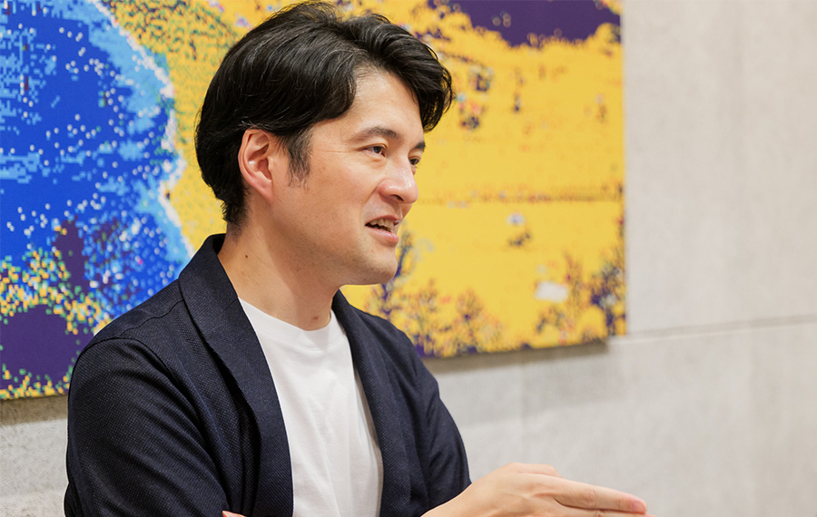
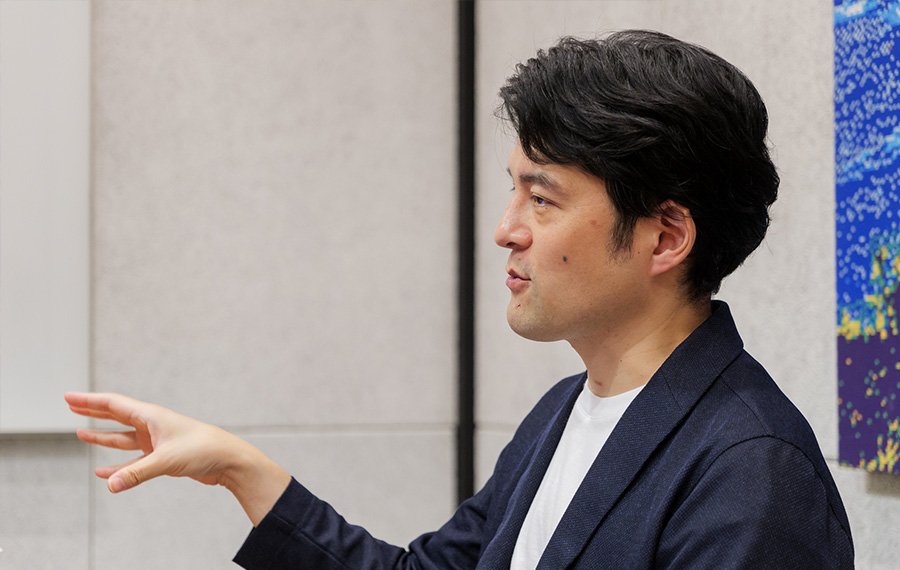
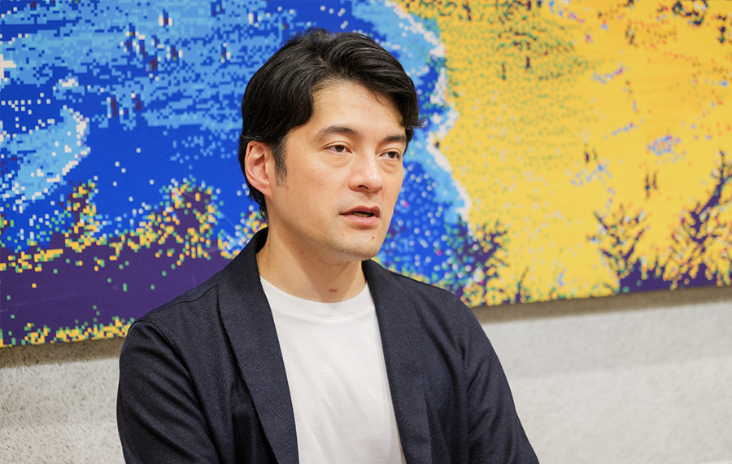

世の中は技術で一変する。最先端は、遠くはない。

比戸 将平
ダイキン工業株式会社 テクノロジー･イノベーションセンター 技師長
2006年京都大学大学院情報学研究科修士修了後、日本IBM東京基礎研究所に入社。データ解析技術の研究開発に従事。2012年Preferred Infrastructureに入社。2015年よりPreferred Networks AmericaにてChief Research Officer。2018年にPreferred Networks本社へ帰任し、執行役員として主に製造業を担当。2023年1月より現職。2002年度未踏ユース（テーマ4次元グラフによるゲノムの可視化）スーパークリエータ。
── これまでのバックグラウンドを教えてください。
世代的に小学校低学年からファミコンでゲームをやっていたのですが、ファイナルファンタジーのようなゲームを、遊ぶだけでなく自分で作ってみたいと思っていました。プログラミングと出会ってからはパソコンを与えられるまで机上でコードを書いたりしていたので、ゲームをやるより創るほうに興味が行ったのでしょう。これは私自身の興味がものづくりや製造業に向かうベースにもなったかもしれません。
転機ということでいうと、大学時代に同級生の西尾泰和さんに誘われて未踏ユースに応募し、採択されたことが決定的でした。当時西尾さんが奈良のベンチャー企業でアルバイトをしており、その会社の社長の和田健之介さんを代表とするチームが未踏ソフトウェア事業本体に採択されていました。そこにはWinny（P２P型の通信方式を持たせたファイル共有ソフト）の開発者である、あの金子勇さんもいたのです。このメンバーで同じ釜の飯を食うような関係になり、一気に違う世界が広がりました。大学で待ち行列理論とネットワークのテーマとした研究室を選んだのも、金子さんの影響でP2Pネットワークに興味があったからです。 ですが、恩師の准教授からネットワークではなくデータマイニングをやるように勧められ、その後の機械学習やAIといったキャリアにつながっていくのですが。
そして修士課程修了後、日本IBMの東京基礎研究所からキャリアが始まりました。IBMでは、研究活動の傍ら、コンサルタントに同行して機械学習を用いた解析結果を示すことで、セールスに貢献するなど、忙しくも充実した日々を過ごしていました。ですが、30歳になって今後のキャリアについて考える機会が増え、新たなチャレンジをするなら今だと思い、社員数約20名だったPreferred Infrastructureに移ったのです。 当時のPreferredは主にエンタープライズ検索エンジンや自然言語処理を扱っており、ちょうど新たに機械学習事業を手がけようとしていたタイミングでした。Preferredの共同創業者である岡野原大輔さんが2002年度未踏ユースの同期だったという縁もあります。Preferredではプロジェクトリードとして、大手通信会社と一緒にオンライン分散機械学習基盤を開発するプロジェクトを担当しました。
その後、アメリカ子会社でアライアンスパートナーを探したり、エンジニアを現地採用して新規ビジネスの立ち上げを行ってきました。帰国後は、研究開発担当VP、インダストリーソリューション担当執行役員として大手顧客の対応を行ってきました。
── そしてChatGPTが世界に公開された翌年、比戸さんは事業会社であるダイキンに転身されたのですね。
IBMとPreferredで日本を代表する大手企業を支援してきましたが、いかにAIの技術があっても、お客様の現場やシステム、データに対する本質的な理解がなければ価値を出すことは難しいと日々感じていました。深く入り込むには数年単位の常駐でやっとスタート地点くらいなので、今後AIで大きいことをやるなら「中の人」として事業会社の中でやったほうが面白いのでは、と感じました。AIが業務の生産性だけでなく、コアの製品・サービスの中核を担うようになるにつれ、内製化もどんどん進むはずですから。
そして事業会社の中でも、選抜した若手社員に積極的にAI教育を行うなど、将来への取り組み姿勢に共感したダイキンに入社したのです。ただ入社後、私が最初に若手社員に向けて伝えたのは、「みんなAIを学んで万能感にあふれているかもしれないけれど、本当に大事なのは現場とデータだよ」ということでした。アルゴリズムを改善するだけで誰かが買ってくれて利益が出せるならそれに越したことはないと思いつつ、いくらアルゴリズムをこねくり回してもデータの理解を間違えていたらウンともスンともならないという、IBM時代の原体験が根強く残っているからです。今はAIが製品・サービスのコアに入り込んできているからこそ、ハードや人も含めた現場に対する価値提供にどうつながるかがますます重要になると考えています。
── 激動のAI史を生き続けている比戸さんは、直近のAIのインパクトをどう感じていますか。

飛躍的な進化が2回ありました。ディープラーニングの登場と、生成AIの登場です。IBMにいた数年間も持続的な変化は起こっていましたが、決定的とまではいえませんでした。当時は、ニューラルネットワークという言葉は旬を過ぎていて、仲間内では「論文タイトルにニューラルネットワークとあるだけで自動的に査読を落とされる」という笑い話があるくらい、冬の時代でした。そもそも機械学習の人たちは自ら「AI」とは言ってなかったし、私も抵抗があってAI研究者と名乗っていませんでした。そのときのAIというのは今のニューラルネットワーク以前のものであって、機械学習は別物と捉えられていたのです。
それが、私がPreferredに入った2012年に、2024年のノーベル物理学賞受賞者、ジェフリー・ヒントン達が画像認識コンテストでディープラーニングの手法を用いてダントツの成績で優勝して、潮目が変わりました。その性能は衝撃的で、Preferredでも「これは今までとは違う不連続な進化が起きている。会社を分けてディープラーニングにフォーカスしよう」ということになり、2014年にPreferred Networksを設立したのです。ですから、幸運にも世の中よりいち早くこのインパクトに気づけていたという自覚はありますね。
その後、AIが着実に社会実装されることで冬の時代を乗り越えた先に、次の大波、生成AIが登場したわけです。その可能性について、NLP（自然言語処理）の人たちはGPT-2が出たあたりから気づいていたようですが、ベースとなったTransformerアルゴリズムが次の大きなパラダイムシフトだと私自身がはっきり認識したのは、ChatGPTが出たときでした。ディープラーニングはまだアルゴリズムを見れば仕組みが理解できました。ですがTransformerを初めて見た時はいまいちピンと来なかったのは本音です。しかも、モデルを大規模化してデータを大量に用意し、計算をぶん回してどんどん性能が良くなるというスケーリング則というのは、今でも心のどこかで納得がいっていないのです。その意味で生成AIのほうが、驚きが強いというか･･･納得感が低いというか。私個人にとっての純粋な驚きやインパクトは生成AIの方が大きいかもしれない。そんな感じがします。
── 比戸さんが今後に向けて考えていることをぜひ教えてください。

2000年代前半からこういう世界を見てきたので、1歳でも長生きしてどこにたどり着くのかは見てみたいですね。今死んでしまうと、20年後の未来を見たときに、「これを自分は体験できなかったんだ」と残念がるだろうなと妄想したりします。実際に、ディープラーニングから10年後にLLM（大規模言語モデル）が来て、では次は何かというのは考えますし、願わくはそれにいち早く気づいて、世の中に展開するところをぜひやりたい。
直近の応用以外で興味があるのは「AIがどういう形で人類に役に立つか」というテーマです。哲学や倫理の観点からいろいろ書物にあたって考えたりしています。たとえば、2024年にノーベル経済学賞を受賞したダロン・アセモグルは最新の著書『技術革新と不平等の1000年史』で、こう警鐘を鳴らしています。「新しい機械や生産方法は新たな雇用を生み、賃金と生活水準を上昇させると信じられてきたが、現実の歴史はしばしばそれに反している。技術革新の果実を資本家と労働者が分け合える仕組みを社会として慎重に作らないと、AIの進化でも同じことが起きるだろう」と。
また、『数学する身体』の著者・森田真生氏の講演で、「チューリングが考えていたのは、知能の可能性が数多くあるなかで、人間の知能はこうで、計算機はそれとは別にこうなり得るということだったのに、いま生成AIは人間の知能を機械に置き換えるという文脈でしか語られていない」と聞いてハッとしました。こうしたことを考えていくと、AIで長期的に目指すべきなのは人間の仕事の代替や対話型エージェントだけでなく、もっと間接的な存在として人間の能力を拡張する使い方ではないか、守り神のような観点で人間を支援する使い方が考えられると違う世界が見えるのではないか、と考えたりしています。
── 最後にメッセージをお願いします。
キャリアを通じて言えることは、世界最先端は意外と手の届くものだということです。ある分野で頑張れば、若手でも意外と簡単に世界の最先端に近づける。特に若ければ若いほど学習曲線は急カーブを描くので、一気に到達できる可能性もある。だからこそ、あまり流行りものを意識しなくてよいのではないかと思います。
私は2024年3月に開かれた未踏会議の「生成AI/LLM未踏的ビジネス活用最前線」というトークセッションで「今の大規模言語モデル開発のように、国の方針や計画経済的な取り組みがすでにあるものではなく、遊ぶように自由な発想で、将来大きく跳ねるかもしれな”何か”を探索するために未踏を使ってほしい」と言いました。若い人であれば、テーマが少々アングラ性を帯びているくらいが良いのではないかと思います。それは、新しいがゆえに今はマイナーなものでもいいし、いったん打ち捨てられているもののリバイバルでもいいかもしれない。オワコンだと思われていたニューラルネットワークが、一躍時代のスターダムに乗ったように。いつの時代も研究者、技術者が、自由な発想を持つことが何より大切だと思っています。
企画・取材・編集 清水隆史